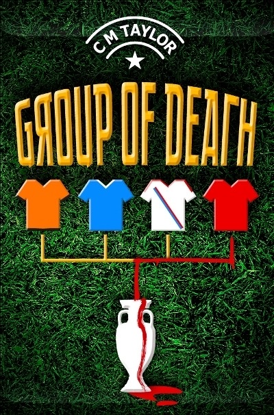
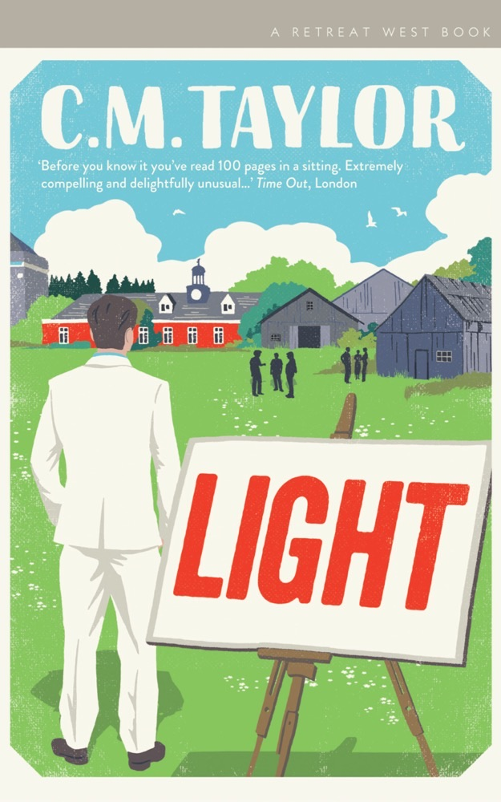
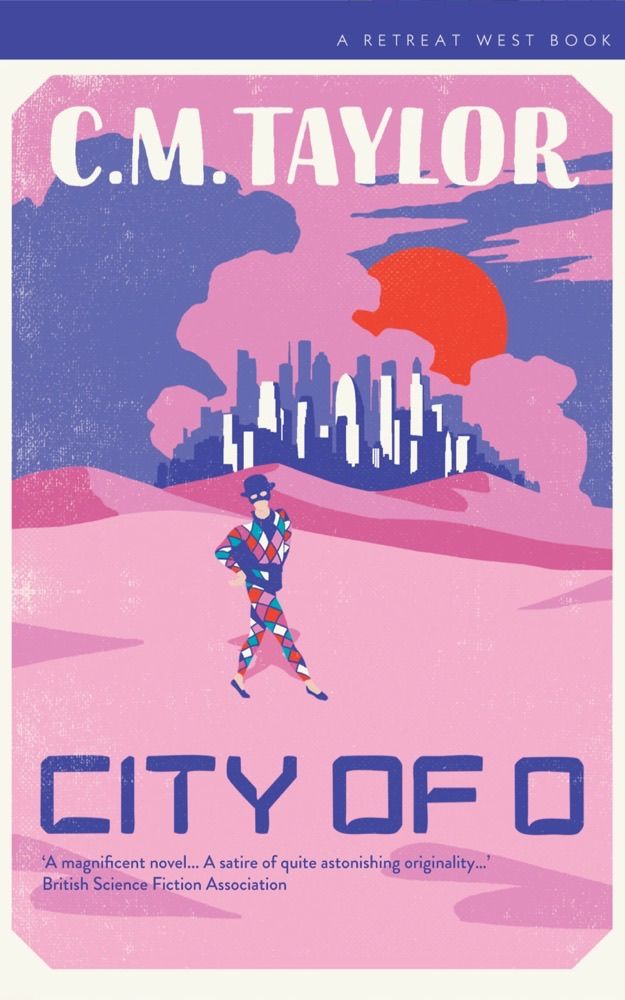

Staying On 2018
A broken family under an expat sun that never quite warms the bones.
“A melancholy and moving family drama.”Sunday MirrorRead
Fiction · Six novels
Sharp comedy and quiet fury – satire, speculative fiction and sweet-and-sour family drama. Two optioned for the screen; one recorded, keystroke by keystroke, for the British Library.
2005 – 2026 · C. M. Taylor

“A coming-of-age revenge caper.”The Guardian
Sometimes cleaning up means getting dirty first.
ReadA broken family under an expat sun that never quite warms the bones.
“A melancholy and moving family drama.”Sunday MirrorRead

Football is the cruellest game – the Premiership Psycho returns.
“Very good writing. Bring on the film.”Plan BRead

